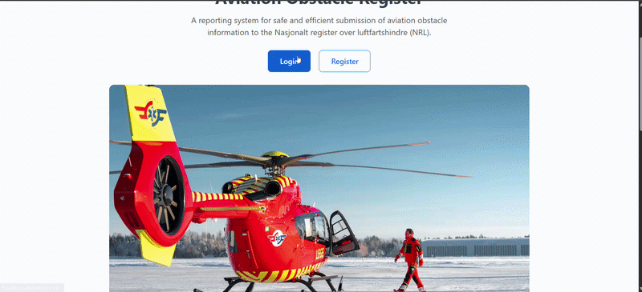

Kartverket

Studentprosjekt i samarbeid med Kartverket og Luftambulansen, hvor vi utviklet en prototype for rapportering av luftfartshindre. Jeg jobbet blant annet med design, prototyping og utvikling av løsningen. Videoen viser admin-siden, hvor rapporterte hindre can gjennomgås, detaljer vurderes, og rapportene godkjennes eller avvises etter nærmere vurdering.